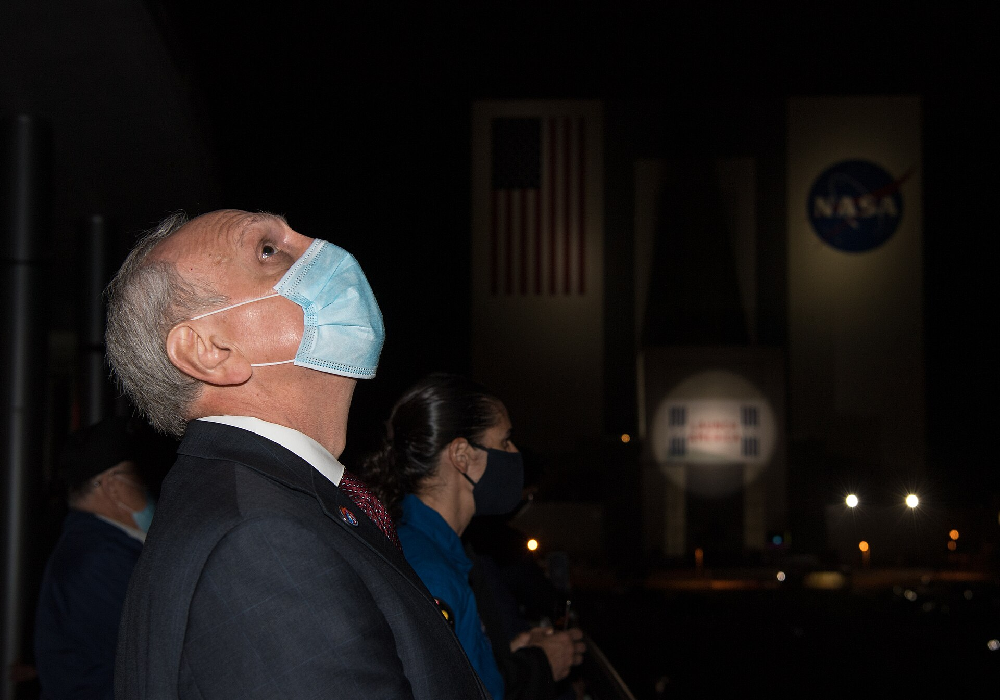
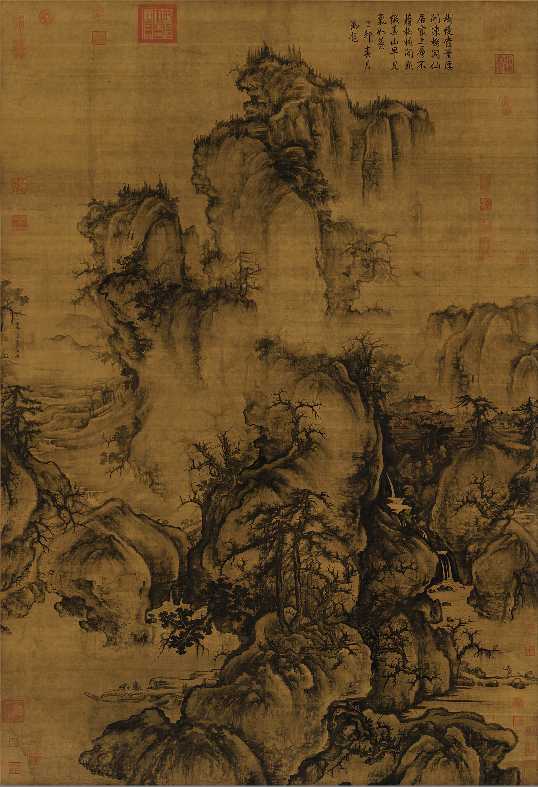
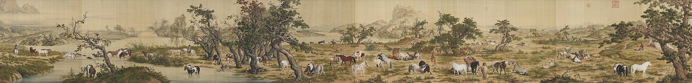
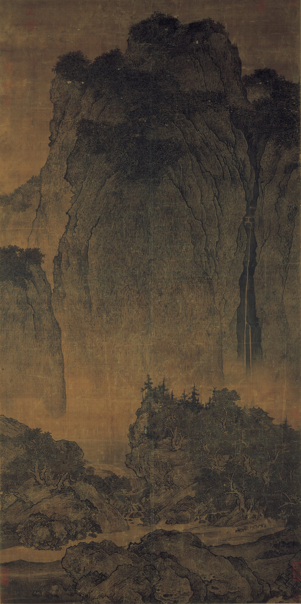

把千年國寶搭上火箭——掃一下，讓國寶在你眼前升空、在軌道上展開。讓世界級的文化，第一次離開地球。
← → / Space 翻頁 ・ F 全螢幕 ・ O 目錄

SpaceX Crew-2 ・ Falcon 9 夜間發射 ・ NASA/SpaceX（公共版權）
SECTION 01 ─ A
The Industry Challenge
01 ─ The Industry Challenge
國寶躺在展櫃裡，離年輕世代越來越遠
故宮的數位典藏多到看不完，卻大多躺在硬碟與展櫃裡；對全球年輕人而言「老、遠、無感」。新體驗：第一次讓國寶搭上火箭、用 AR 在你眼前升空——文化第一次離開地球。
文化聯名正當紅，太空是最大舞台
麥肯錫 2023：68% 消費者偏好與文化機構連結的品牌；文化 IP 授權市場 2027 上看 3,387 億美元。台灣文創 2023 年產值 1.13 兆元、佔 GDP 4.78%。話題與規模都在。
SRC ─ McKinsey 2023 / 產業預估 / TAICCA 2023 年報
雙贏的全球 PR + 數位收入
SpaceX rideshare 一直在找有意義、有話題的酬載；故宮要年輕化與全球化。收入線：AR 數位藏品、聯名周邊、品牌贊助、故宮數位典藏導流、全球媒體聲量。
SRC ─ SpaceX Transporter rideshare / 故宮 Open Data
SECTION 02 ─ B
A Clear Problem Statement
02 ─ A Clear Problem Statement

郭熙《早春圖》・ 國立故宮博物院（公共版權）— 國寶很美，但年輕人不會主動點開。
全球年輕世代 × 文化／太空迷
Persona：大學生小薇，覺得故宮「是校外教學去的」，但會為一個能 AR 分享、有故事的體驗買單。
① 國寶與年輕人「無感、有距離」② 數位典藏躺著沒人看 ③ 觀光客只買得到明信片磁鐵 ④ 太空酬載缺有意義、有話題的內容夥伴。
次級資料：68% 偏好文化聯名、文創 1.13 兆。一手驗證：校園與故宮現場問卷 200 份、AR 原型小規模試用完成率與分享率。
SECTION 03 ─ C
Product Introduction
03 ─ Product Introduction

郎世寧《百駿圖》長卷 ・ 國立故宮博物院（公共版權）
03 ─ Product Introduction
先驗證一條假設：年輕人願意「發射國寶」並主動分享。其餘先砍。

范寬《谿山行旅圖》— 掃一下，這幅國寶會在 AR 中升空。
03 ─ Product Introduction
MVP 的每一項功能都對應第二章的痛點——對不上的先砍。
| MVP 功能 | 對應的痛點／需求 | 帶來什麼改變 |
|---|---|---|
| AR 發射國寶 | 國寶無感、典藏沒人看（痛點①②） | 把「躺在展櫃」變成「在你手上升空、想分享」。 |
| 數位太空藏品 | 觀光客只買得到明信片磁鐵（痛點③） | 人人帶得走、可收藏可炫耀的數位國寶。 |
| 真實太空酬載 | 太空酬載缺有意義的夥伴（痛點④） | 給 SpaceX 一個全球都會報導的文化故事，故宮拿到世界級舞台。 |
03 ─ Product Introduction
PERCEPTUAL MAP ─ 數位體驗 × 全球話題：右上象限目前無人
03 ─ Product Introduction
每個實驗先寫下「要驗證的假設」，再蒐集證據。
先做 1 件國寶的 AR 發射原型
假設：試用者完成「發射」並看完 ≥ 80%。
AR 結束鼓勵錄影分享
假設：分享率 ≥ 15%（社群擴散的關鍵）。
小量開放認購
假設：看完 AR 者認購轉換 ≥ 5%。
用一則「國寶上太空」前導發布測風向
假設：兩週內取得 ≥ 20 家媒體報導。
03 ─ Product Introduction
發布前先訂好門檻，讓數字說話。
AR 真的有人玩完
AR 完成率 ≥ 80%。
會自己長出聲量
分享率 ≥ 15%、媒體 ≥ 20 則。
有人願意買單
數位藏品認購轉換 ≥ 5%。
真的觸及新世代
使用者 18–34 歲占 ≥ 60%。